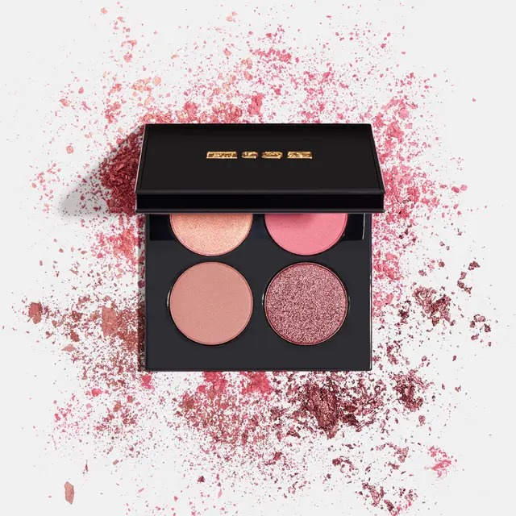
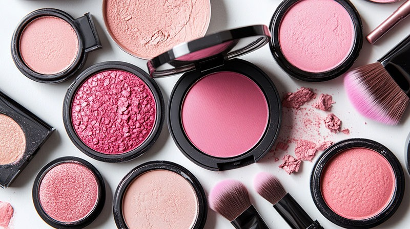
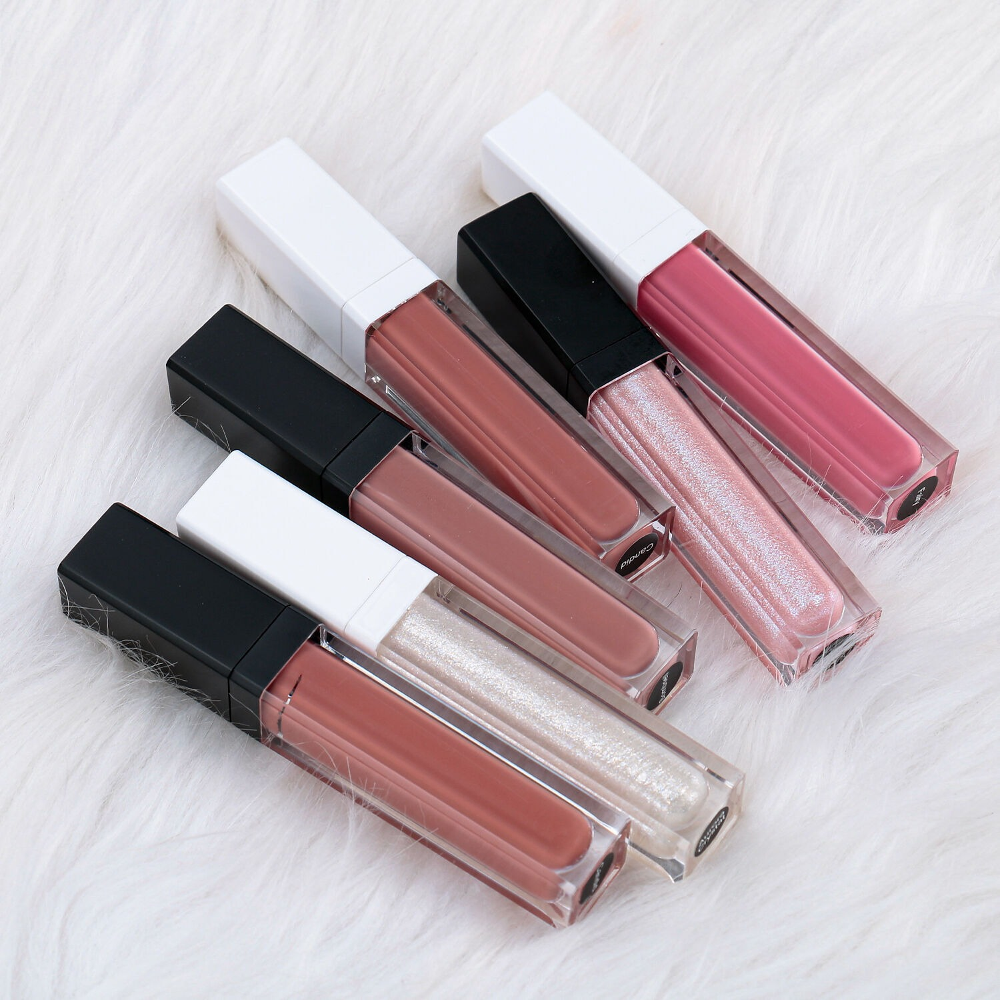

Medium skin tones shine with bronze, copper, and earthy shades.
These colors highlight the warmth of the skin and make the eyes glow naturally.

Coral blush and golden bronzer enhance medium skin, giving a
radiant and sun-kissed look while balancing the natural undertones.

Berry, mauve, and warm red lip colors flatter medium skin tones
adding depth and elegance to the overall makeup look.